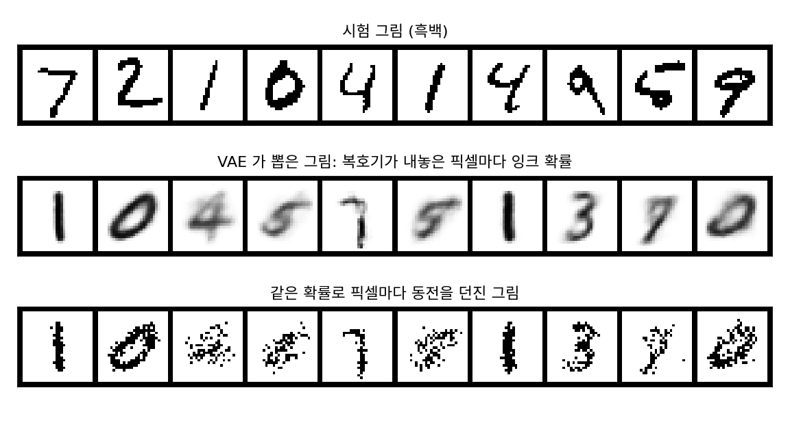
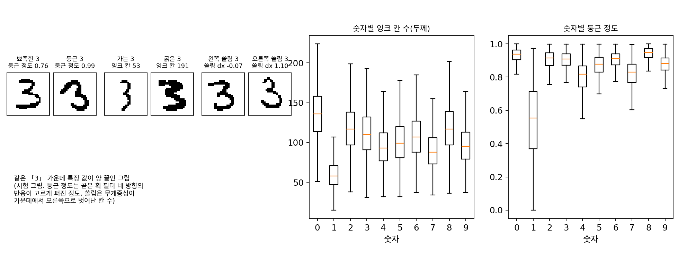
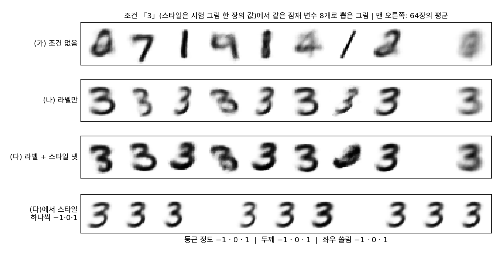

흐림: 조건을 세밀하게 주면 선명해질까
VAE 가 뽑은 그림을 보면 아직 흐릿하다. 사전분포에서 잠재 변수를 뽑아 디코더가 내놓은 잉크 확률을 그리면, 회색(0.2 ~ 0.8) 칸이 18.5%다. 학습에 쓴 흑백 그림에는 회색 칸이 하나도 없다.

잠재 변수를 16칸으로 늘려 같은 방식으로 학습해도 회색 칸이 8.6% 남는다. 잠재 변수가 늘면 ELBO는 −90.36까지 오르지만 흐릿함은 사라지지 않는다.
흐림이 어디서 오는지는 이 장의 첫 절에서 이미 보았다. 라벨 「3」 하나에 6,131가지 3이 붙어 있으면, 제곱 오차로 배운 신경망은 그 평균을 그렸다. VAE 의 디코더도 같은 자리에 있다. 잠재 변수 2칸이 정해진 뒤에도 그 자리에 어울리는 그림이 여럿 남아 있으면, 디코더는 칸마다 그 그림들의 잉크 비율을 내놓을 수밖에 없다. 그렇다면 디코더에게 정보를 더 주면 어떨까? 같은 3이라도 「뾰족한 3」인지 「둥근 3」인지, 굵게 썼는지 가늘게 썼는지까지 알려 주면 남는 후보가 줄어 평균이 덜 흐려지지 않을까?
조건을 디코더에 함께 주기
가장 쉬운 정보는 라벨이다. 인코더와 디코더의 입력 끝에 라벨 원-핫 벡터를 이어 붙이고, 나머지는 VAE 와 똑같이 학습한다. 그러면 디코더는 「잠재 변수 z와 조건 c를 받아 그림을 그리는」 함수 pθ(x ∣ z, c)가 되고, 새 그림을 뽑을 때는 원하는 조건을 골라 주고 잠재 변수는 N(0, I)에서 뽑는다. 이렇게 조건을 받는 VAE 를 조건부 VAE (조건을 함께 받는 VAE / conditional VAE)라 한다. 2015년 손기혁(Kihyuk Sohn), 이홍락(Honglak Lee), 옌(Xinchen Yan)이 출력이 여러 가지일 수 있는 예측 문제를 풀려고 이 구조를 내놓았다.
스타일을 그림에서 재기
라벨보다 세밀한 조건은 데이터에 붙어 있지 않으니, 그림에서 직접 잰다. 세 가지를 쟀다.
- 쏠림: 잉크 칸들의 무게중심이 28 × 28 격자 가운데에서 좌우·상하로 몇 칸 벗어났나(두 수). 재 보니 학습 그림 6만 장의 표준편차가 0.31칸, 0.33칸뿐이었다. MNIST 는 만들 때 그림을 잉크의 무게중심이 격자 가운데에 오도록 옮겨 두었기 때문이다. 흑백으로 자르면서 생긴 작은 어긋남만 남았다.
- 두께: 잉크 칸 수. 숫자마다 원래 다르다(중앙값 1은 58칸, 3은 110칸, 0은 136칸). 그래서 같은 숫자 안에서의 순위로 쓴다. 학습 그림 「3」 6,131장은 아래 10%가 75칸 이하, 위 10%가 152칸 이상이다.
- 둥근 정도: 가로·세로·두 대각선 방향의 곧은 획을 찾는 5칸짜리 필터 네 개를 합성곱으로 씌우고, 잉크 칸마다 어느 방향으로 곧게 가장 길게 이어지는지 센다. 네 방향에 고르게 퍼질수록 둥글다(방향 비율의 엔트로피를 log 4로 나눈 값, 0 ~ 1). 숫자별 평균은 1이 0.53, 7이 0.82, 0이 0.93, 8이 0.94다. 이것도 같은 숫자 안의 순위로 쓴다.

조건으로는 라벨에 스타일 넷(좌우 쏠림, 상하 쏠림, 두께, 둥근 정도)을 붙였다. 스타일은 각각 학습 그림을 네 구간으로 나눠 구간 번호로 준다. 조건이 몇 가지 값 가운데 하나여야 그 조건이 얼마나 흔한지를 셀 수 있어서다. 라벨 10 × 스타일 4⁴ = 2,560가지 조건이 된다.
세 모델 견주기
몸통·잠재 변수 2칸·학습 횟수가 같고 조건만 다른 세 모델을 견주었다. (가) 조건 없는 VAE, (나) 라벨만 받는 조건부 VAE, (다) 라벨과 스타일 넷을 받는 조건부 VAE. 시험 그림 1만 장의 조건으로 N(0, I)에서 잠재 변수를 하나씩 뽑아 그린 그림과, 시험 그림을 인코더에 넣었다 되살린 그림을 잰다.
| (가) 조건 없음 | (나) 라벨 | (다) 라벨 + 스타일 넷 | |
|---|---|---|---|
| 뽑은 그림의 회색 칸 | 18.6% | 15.7% | 13.6% |
| 조건의 라벨로 읽힘 | (조건 없음) | 99.7% | 98.9% |
| 같은 조건으로 16장 뽑았을 때 칸마다 흩어짐 | 0.125 | 0.100 | 0.092 |
| 시험 그림을 되살린 제곱 거리 | 41.71 | 37.50 | 33.28 |
| 조건을 받은 ELBO (재구성 − KL) | −137.56 | −123.58 | −111.57 |
조건을 더 줄수록 회색 칸이 줄고, 되살린 그림이 원래 그림에 가까워지고, ELBO 가 오른다. 그런데 같은 조건에서 뽑은 그림끼리의 흩어짐도 함께 줄었고, 회색 칸은 13.6%에서 멈춰 있다.

문제 20. 칸마다 동전을 던지면 흐림이 사라질까
VAE가 뽑은 그림은 잉크 확률이라 흐릿하다. 그렇다면 디코더가 내놓은 확률대로 칸마다 동전을 던져 흑백 그림을 만들면 되지 않을까? 이 장의 VAE(잠재 변수 2칸)에서 N(0, I)로 잠재 변수 1만 개를 뽑아 그렇게 만든 그림과, 시험 그림을 견준다. 상하좌우 네 이웃이 모두 바탕인 잉크 칸을 「외톨이 잉크 점」이라 하자. (가) 그림 한 장당 외톨이 잉크 점은 시험 그림에서 0.06개, 동전 그림에서 9.74개다(잉크 칸 수는 둘 다 한 장당 약 104개). 무엇이 달라졌는가? (나) 왜 이런 일이 생기는가? (다) 무엇을 바꾸어야 하는가?

동전을 던지면 칸마다 0 아니면 1이니까 회색이 없어지죠. 흐림 문제는 끝났네요.

잉크 칸 수는 비슷한데, 외톨이 점이 160배예요. 그림으로는 어때요?

획 둘레에 깨 뿌린 것 같은 점이 많고, 획 가운데도 구멍이 숭숭 났어요. 흐린 그림이 지저분한 그림으로 바뀌었을 뿐이에요.

실제 손글씨에서는 왜 외톨이 점이 거의 없을까요?

펜으로 그으니까요. 한 칸이 잉크면 그 옆 칸도 잉크일 가능성이 아주 커요. 칸들이 서로 맞춰서 움직여요.

그런데 디코더는 pθ(x ∣ z)를 칸마다 따로 던지는 동전 784개의 곱으로 정했어요. 잠재 변수 z가 정해진 뒤에는 칸끼리 아무 관계가 없어요. 잠재 변수 2칸이 「획이 정확히 어디를 지나는지」까지 다 정하지 못하면, 남은 불확실함은 칸마다 따로 던지는 동전으로밖에 나타낼 수 없어요. 확률을 그리면 흐려지고, 동전을 던지면 칸마다 따로 튀어요.

그거 맨 처음 문제랑 같아요! 절댓값 오차를 칸마다 따로 쓰면 획이 끊긴다던 거요. 칸들이 「이번엔 왼쪽 1」이라고 함께 정하는 장치가 없으니까요.

그래요. 잠재 변수를 16칸으로 늘려도 회색 칸이 8.6% 남았어요. 잠재 변수가 늘면 남은 불확실함이 줄지만 없어지지는 않아요. (다)는 이 장에서 바로 답할 수 없어요. 칸들이 서로 맞춰 움직이는 그림의 분포를, 동전 784개의 곱이 아닌 다른 꼴로 적어야 해요.
확률론 시간에 「각 좌표의 주변분포가 맞는다고 결합분포가 맞는 건 아니다」고 배운 게 바로 이 그림이네요.
문제 21. 뾰족한 3과 둥근 3을 알려 주면
위의 세 모델을 두고 토론한다. 아래는 학습 그림으로 잰 값이다. 「조건만 아는 가장 좋은 디코더」는 조건이 같은 학습 그림들의 칸마다 잉크 비율을 그대로 내놓는 디코더이고(잠재 변수 없음), 그 재구성은 시험 그림으로 잰 평균 로그 확률이다. 「조건의 로그 확률」은 학습 그림에서 그 조건(라벨, 또는 라벨과 스타일 구간)이 나온 비율의 로그를 시험 그림마다 평균 낸 값이다.
(가) 조건 없음 (나) 라벨 (다) 라벨 + 스타일 넷 조건 안에 남은 칸마다 분산의 합 (전체 67.47) 67.47 55.80 47.95 조건만 아는 가장 좋은 디코더의 재구성 (nat) −205.9 −169.8 −169.4 조건의 로그 확률 log p(c) (nat) 0 −2.30 −7.77 조건을 받은 ELBO (nat) −137.56 −123.58 −111.57 (가) 조건을 세밀하게 주면 VAE 그림이 선명해지는가? (나) (다)의 ELBO가 (가)보다 26 nat 높다. 두 값은 같은 것을 잰 것인가? (다) 그렇다면 조건을 한없이 잘게 나누면 되는가? (라) 둥근 정도를 재려고 우리는 곧은 획 필터 네 개를 손으로 골랐다. 이 실험에서 아쉬운 점은 무엇인가?
(가)는 「된다」예요. 회색 칸이 18.6%, 15.7%, 13.6%로 줄었고, 위젯 6에서 라벨 3에 둥근 정도만 올려도 3이 동그래져요. 조건을 많이 줄수록 남는 후보가 줄어서 평균이 덜 흐려지는 거죠.
나는 「조금만 된다」에 걸게. 13.6%도 흑백 그림의 0%와는 한참 멀어. 위젯에서 같은 조건으로 잠재 변수 여덟 개를 넣은 평균은 29.5%, 26.0%, 23.0%로 여전히 뿌옇고. 디코더가 칸마다 따로 던지는 동전이라는 건 그대로잖아. 앞 문제에서 본 것처럼, 잠재 변수와 조건이 정해진 뒤에 남은 불확실함은 칸마다 따로 퍼질 수밖에 없어.
둘 다 숫자가 있으니 좋아요. 그 남은 불확실함이 얼마나 되는지를 먼저 재 봐요. 첫 줄은 무엇을 잰 거예요?

코드로 해 보니까 이래요. 학습 그림 전체의 칸마다 분산을 더하면 67.47이에요. 라벨별로 묶어 묶음 안의 분산을 평균 내면 55.80이고, 두 값의 차 11.67은 라벨별 평균 그림끼리의 분산이에요. 전체 분산 = 조건 안 분산의 평균 + 조건별 평균의 분산이요.

첫 절에서 본 조건부 평균이네. 라벨만 아는 신경망이 제곱 오차로 아무리 잘 배워도 라벨별 평균 그림을 내놓을 뿐이니, 55.80만큼은 꼭 틀려. 스타일 칸까지 나누면 47.95로 바닥이 내려가고. 조건을 주는 건 그 바닥을 낮추는 일이구나. 그래서 (가)의 답은 「바닥이 낮아지는 만큼만 선명해진다」야. 민준이랑 내가 둘 다 반만 맞았네.
그럼 (나)는 쉬워요. 조건을 주니까 ELBO가 −137.56에서 −111.57로 26 nat나 올랐어요. 조건부 VAE 가 그림을 훨씬 잘 설명하는 모델이에요.

(다)의 ELBO는 무엇의 바닥이었죠? 그림 x의 로그 확률이에요?

어… 조건 c를 받은 뒤의 log pθ(x ∣ c)의 바닥이에요. 조건은 공짜로 받았고요. 그림을 처음부터 뽑으려면 조건부터 골라야 하는데, 그 값은 안 셌어요.
조건을 비율 p(c)대로 고른 다음 그 조건의 그림을 그리는 모델이라고 보면, 그 모델이 x에 주는 확률은 p(c)pθ(x ∣ c)보다 작지 않아. 그러니까 공정하게 견주려면 log p(c)를 더해야 해. (나)는 −123.58 − 2.30 = −125.88, (다)는 −111.57 − 7.77 = −119.34야. 26 nat가 아니라 18 nat쯤 오른 거네. 그래도 오르긴 올랐어.
왜 올랐을까요? 조건이라는 것을 모델 쪽에서 보면 무엇이에요?

조건을 고르는 것도 「먼저 무언가를 뽑고 그다음에 그림을 그린다」는 거니까, 잠재 변수를 하나 더 둔 셈이에요. 2칸짜리 연속 잠재 변수에 10가지, 2,560가지짜리 이산 잠재 변수를 덧붙인 거고요. 단, 그 이산 잠재 변수의 값은 사람이 재서 정해 줬고요.
그럼 (다)는요, 조건을 무한히 잘게 주면 되잖아요. 바닥이 계속 내려가니까요.
둘째 줄을 봐요. 라벨에서 라벨 + 스타일로 갈 때 조건만 아는 디코더의 재구성은 얼마나 나아졌어요?
−169.8에서 −169.4… 0.4 nat요. 첫 줄에서는 분산이 55.80에서 47.95로 꽤 줄었는데요?

첫 줄은 학습 그림 안에서 잰 거고, 둘째 줄은 칸 비율을 학습 그림으로 세고 시험 그림으로 잰 거야. 2,560칸이면 칸마다 학습 그림이 평균 23장뿐이라, 칸 평균을 믿을 수가 없어. 게다가 조건 값이 −2.30에서 −7.77로 비싸졌어. 끝까지 잘게 나누면 칸마다 그림이 한 장이 되고, 그 조건을 정하는 건 그림을 통째로 정하는 일이 돼. 조건의 로그 확률이 그림 하나의 로그 확률만큼 비싸지는 거지. 같은 조건에서 뽑은 그림의 흩어짐도 0.125, 0.100, 0.092로 줄었으니 다양성도 사라지고.
그래요. 조건은 공짜가 아니에요. 바닥을 낮춘 만큼 log p(c)로 값을 치르고, 그 조건을 누가 정해 줘야 해요. 그럼 사람이 조건을 정해 주는 대신 무엇이 정해 줄 수 있을까요?
모델이 스스로요. 처음엔 아주 거친 그림을 그리고, 그 거친 그림을 조건으로 조금 더 또렷한 그림을 그리고, 또 그걸 조건으로… 이렇게 여러 번 나눠 그리면, 한 단계에서 맞힐 것은 앞 단계가 정하고 남은 아주 작은 흩어짐뿐이에요. 남은 게 작으면 칸마다 따로 퍼진 가우시안 하나로도 꽤 잘 맞힐 수 있고요. 그 모델의 바닥은 단계마다의 항을 더한 꼴이 되겠네요.
그 생각을 끝까지 밀고 간 것이, 그림에 잡음을 조금씩 섞어 두고 그 잡음을 여러 걸음에 나눠 걷어 내도록 배우는 디퓨전 모델이에요. 걸음마다 앞 걸음의 결과가 다음 걸음의 조건이 되고, 그 ELBO 는 걸음마다의 항을 더한 꼴이에요. (라)는요?
둥근 정도 필터요. 가로·세로·대각선 네 개를 우리가 골랐는데, 그게 숫자를 가르는 데 정말 좋은 필터인지는 몰라요. 쏠림은 MNIST 가 이미 가운데 맞춰 놔서 거의 쓸모가 없었고요. 어떤 필터가 쓸모 있는지를 사람이 정하지 않고, 라벨 없이 데이터에서 저절로 찾을 수는 없을까요?
좋은 물음이에요. 필터의 숫자 자체를 학습으로 정하는 신경망이 있어요. 합성곱 필터를 층마다 배우는 합성곱 신경망이고, 그것을 여러 해상도로 내려갔다 올라오게 쌓은 것이 U-Net 이에요. 이 장의 MLP 는 784칸을 한 줄로 늘어놓고 다뤘지만, 그 신경망들은 그림이 2차원으로 이웃한다는 사실을 처음부터 이용해요.
조별 과제 채점 기준을 교수님이 하나하나 정해 주는 대신, 잘된 과제들을 보고 기준을 우리가 찾아내는 거네요.
확률론 시간에 조건을 하나 더 붙일 때마다 조건부 분산의 기댓값은 줄어들기만 한다고 배웠는데, 그 정리가 바닥이 내려가는 이유였어. 대신 조건 자체를 적는 값은 따로 치러야 하고.